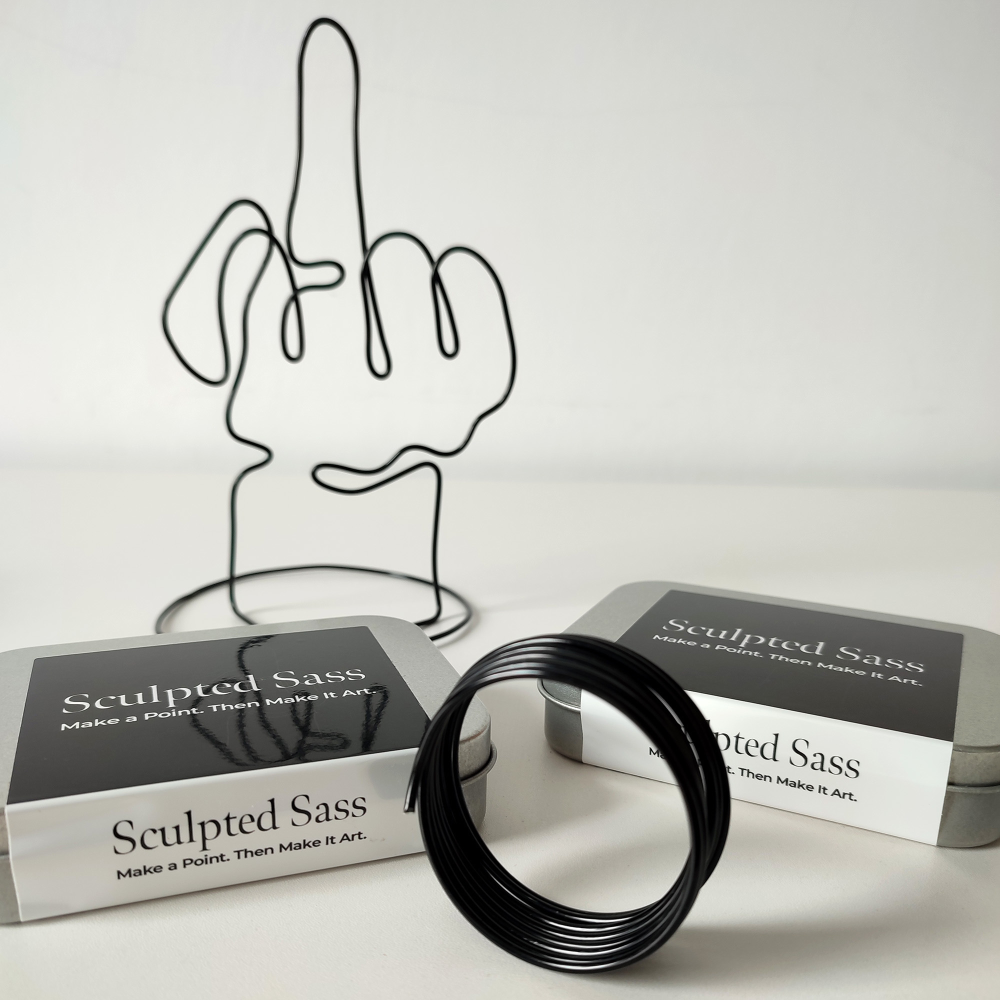
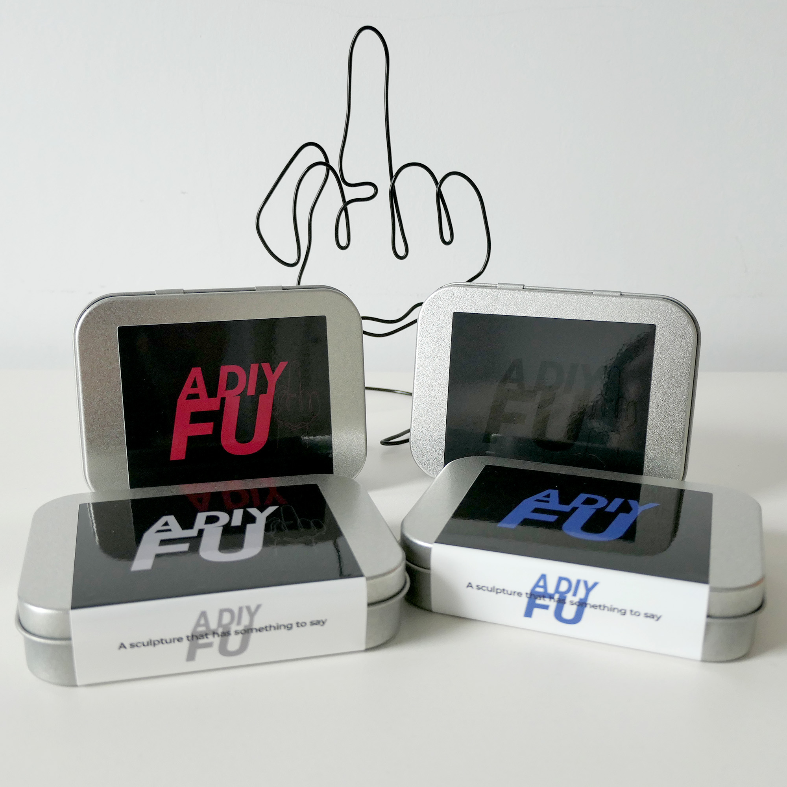

Civil Spite Atelier
Civil Spite Atelier personifies design-led attitude — playful, sharp, and a little rebellious.
Built for people who like their self-expression stylish, hands-on, and impossible to ignore.
Art, craft, and culture with a knowing smirk.
Click on a category below to start exploring ACP's cycling giftware.
Sculpted Sass

A DIY FU
